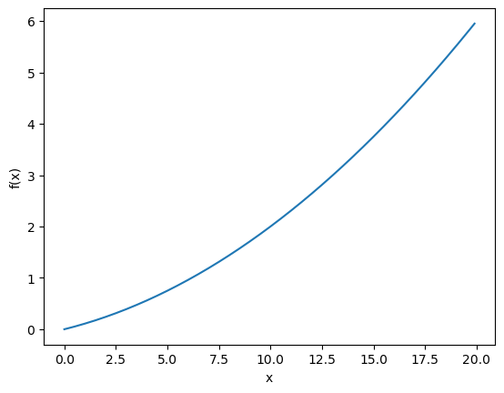
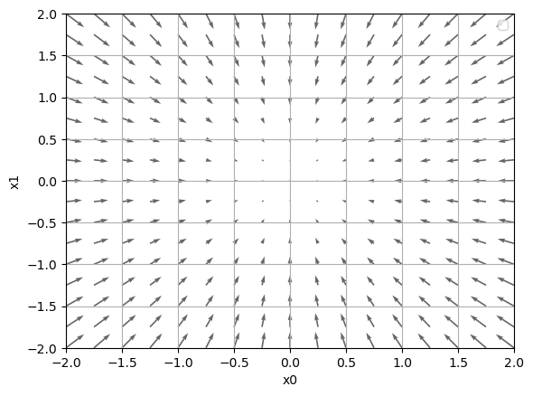
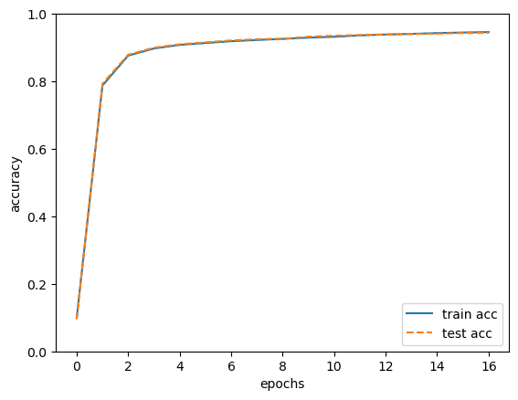

正文
4.1 从数据中学习
4.1.1 数据驱动
深度学习有时也称为端到端机器学习（end-to-end machine learning）。这里所说的端到端是指从一端到另一端的意思，也就是从原始数据（输入）中获得目标结果（输出）的意思。
4.1.2 训练数据和测试数据
机器学习中，一般将数据分为训练数据(也可称为监督数据)和 测试数据 两部分来进行学习和实验等。
首先，使用训练数据进行学习，寻找最优的参数
然后，使用测试数据评价训练得到的模型的实际能力
4.2 损失函数
神经网络的学习中所用的指标称为损失函数（loss function） 。这个损失函数可以使用任意函数，但一般用均方误差和交叉熵误差等。
4.2.1 均方误差
E = 1 2 ∑ k ( y k − t k ) 2 E=\frac{1}{2}\sum_k(y_k-t_k)^2
E = 2 1 k ∑ ( y k − t k ) 2
y k y_k y k t k t_k t k k k k
1 2 def mean_squared_error (y, t ):return 0.5 * np.sum ((y - t) ** 2 )
1 2 0 , 0 , 1 , 0 , 0 , 0 , 0 , 0 , 0 , 0 ]
1 2 3 0.1 , 0.05 , 0.6 , 0.0 , 0.05 , 0.1 , 0.0 , 0.1 , 0.0 , 0.0 ]
0.09750000000000003
1 2 3 0.1 , 0.05 , 0.1 , 0.0 , 0.05 , 0.1 , 0.0 , 0.6 , 0.0 , 0.0 ]
0.5975
均方误差显示第一个例子的输出结果与监督数据更加吻合。
4.2.2 交叉熵误差
E = − ∑ k t k log y k E=-\sum_kt_k\log y_k
E = − k ∑ t k log y k
1 2 3 4 5 6 7 8 9 def cross_entropy_error (y, t ):""" 参数 y 和 t 是 NumPy 数组。函数内部在计算 np.log 时，加上了一 个微小值 delta。这是因为，当出现 np.log(0)时，np.log(0)会变为负无限大 的-inf，这样一来就会导致后续计算无法进行。作为保护性对策，添加一个 微小值可以防止负无限大的发生。 """ 1e-7 return -np.sum (t * np.log(y + delta))
1 2 3 t = [0 , 0 , 1 , 0 , 0 , 0 , 0 , 0 , 0 , 0 ]0.1 , 0.05 , 0.6 , 0.0 , 0.05 , 0.1 , 0.0 , 0.1 , 0.0 , 0.0 ]
0.510825457099338
1 2 y = [0.1 , 0.05 , 0.1 , 0.0 , 0.05 , 0.1 , 0.0 , 0.6 , 0.0 , 0.0 ]
2.302584092994546
4.2.3mini-batch 学习
E = − 1 N ∑ n ∑ k t n k log y n k E=-\frac{1}{N}\sum_n\sum_kt_{nk}\log y_{nk}
E = − N 1 n ∑ k ∑ t n k log y n k
从全部数据中选出一部分，作为全部数据的“近似”。神经网络的学习也是从训练数据中选出一批数据（称为 mini-batch, 小批量），然后对每个 mini-batch 进行学习。这种学习方式称为 mini-batch 学习 。
1 2 3 4 5 6 7 8 9 10 11 import sys, osimport numpy as npfrom dataset.mnist import load_mnistTrue , one_hot_label=True )print (x_train.shape) print (t_train.shape)
(60000, 784)
(60000, 10)
从这个训练数据中随机抽取 10 笔数据。
1 2 3 4 5 train_size = x_train.shape[0 ]10
使用 np.random.choice() 可以从指定的数字中随机选择想要的数字。
比如，np.random.choice(60000, 10) 会从 0 到 59999 之间随机选择 10 个数字
1 np.random.choice(60000 , 10 )
array([30142, 18947, 8349, 38135, 8519, 25729, 36061, 11248, 12602,
31498])
4.2.4mini-batch 版交叉熵误差的实现
监督数据 t t t
1 2 3 4 5 6 7 8 9 def cross_entropy_error (y, t ):if y.ndim == 1 :1 , t.size)1 , y.size)0 ]return -np.sum (t * np.log(y + 1e-7 )) / batch_size
当监督数据是标签形式（非 one-hot 表示，而是像“2”“7”这样的标签）时：
1 2 3 4 5 6 7 8 def cross_entropy_error (y, t ):if y.ndim == 1 :1 , t.size)1 , y.size)0 ]return -np.sum (np.log(y[np.arange(batch_size), t] + 1e-7 )) / batch_size
4.2.5 为何要设定损失函数
在进行神经网络的学习时，不能将识别精度作为指标。因为如果以识别精度为指标，则参数的导数在绝大多数地方都会变为 0（识别精度是离散的，对微小的参数变化基本上没有什么反应，即便有反应，它的值也是不连续地、突然地变化）。
4.3 数值微分
4.3.1 导数
导数定义式：
d f ( x ) d x = lim h → 0 f ( x + h ) − f ( x ) h \frac{\mathrm df(x)}{\mathrm dx}=\lim_{h\to 0}\frac{f(x+h)-f(x)}{h}
d x d f ( x ) = h → 0 lim h f ( x + h ) − f ( x )
不好的实现示例：
1 2 3 def numerical_diff (f, x ):10e-50 return (f(x+h) - f(x)) / h
d f ( x ) x = lim h → 0 f ( x + h ) − f ( x − h ) 2 h \frac{\mathrm d f(x)}{\mathrm x}=\lim_{h\to 0}\frac{f(x+h)-f(x-h)}{2h}
x d f ( x ) = h → 0 lim 2 h f ( x + h ) − f ( x − h )
1 2 3 def numerical_diff (f, x ):1e-4 return (f(x + h) - f(x - h)) / (2 * h)
4.3.2 数值微分的例子
对 y = 0 . 0 1 x 2 + 0 . 1 x y=0.01x^2+0.1x y = 0 . 0 1 x 2 + 0 . 1 x
1 2 def function_1 (x ):return 0.01 * x ** 2 + 0.1 * x
1 2 3 4 5 6 7 8 9 import numpy as npimport matplotlib.pylab as plt0.0 , 20.0 , 0.1 ) "x" )"f(x)" )

1 numerical_diff(function_1, 5 )
0.1999999999990898
1 numerical_diff(function_1, 10 )
0.2999999999986347
4.3.3 偏导数
对于函数 f ( x 0 , x 1 ) = x 0 2 + x 1 2 f(x_0,x_1)=x^2_0+x^2_1 f ( x 0 , x 1 ) = x 0 2 + x 1 2
1 2 def function_2 (x ):return x[0 ] ** 2 + x[1 ] ** 2
当 x 0 = 3 , x 1 = 4 x_0=3,x_1=4 x 0 = 3 , x 1 = 4 x 0 x_0 x 0
1 2 3 4 def function_tmp1 (x0 ):return x0*x0 + 4.0 **2.0 3.0 )
6.00000000000378
当 x 0 = 3 , x 1 = 4 x_0=3,x_1=4 x 0 = 3 , x 1 = 4 x 1 x_1 x 1
1 2 3 4 def function_tmp2 (x1 ):return 3.0 ** 2.0 + x1 * x14.0 )
7.999999999999119
4.4 梯度
像 ( ∂ f ∂ x 0 , ∂ f ∂ x 1 ) \left(\frac{\partial f}{\partial x_0},\frac{\partial f}{\partial x_1}\right) ( ∂ x 0 ∂ f , ∂ x 1 ∂ f ) 梯度（gradient） 。
1 2 3 4 5 6 7 8 9 10 11 12 13 14 15 16 17 18 def numerical_gradient (f, x ):1e-4 for idx in range (x.size):2 * h)return grad
求点 ( 3 , 4 ) (3,4) ( 3 , 4 ) ( 0 , 2 ) (0,2) ( 0 , 2 ) ( 3 , 0 ) (3,0) ( 3 , 0 )
1 numerical_gradient(function_2, np.array([3.0 , 4.0 ]))
array([6., 8.])
1 numerical_gradient(function_2, np.array([0.0 , 2.0 ]))
array([0., 4.])
1 numerical_gradient(function_2, np.array([3.0 , 0.0 ]))
array([6., 0.])
No artists with labels found to put in legend. Note that artists whose label start with an underscore are ignored when legend() is called with no argument.

梯度会指向各点处的函数值降低的方向。更严格地讲，梯度指示的方向是各点处的函数值减小最多的方向。
4.4.1 梯度法
通过巧妙地使用梯度来寻找函数最小值（或者尽可能小的值）的方法就是梯度法。
函数的极小值 、最小值 以及被称为**鞍点（saddle point）**的地方，梯度为 0。
根据目的是寻找最小值还是最大值，梯度法的叫法有所不同。
一般来说，神经网络（深度学习）中，梯度法主要是指梯度下降法。
x_0=x_0-\eta\frac{\partial f}{\partial x_0} \\ x_1=x_1-\eta\frac{\partial f}{\partial x_1}
η \eta η
1 2 3 4 5 6 7 8 9 10 11 12 13 14 def gradient_descent (f, init_x, lr=0.01 , step_num=100 ):""" 参数 f 是要进行最优化的函数 init_x 是初始值 lr 是学习率 learning rate step_num 是梯度法的重复次数 numerical_gradient(f,x) 会求函数的梯度，用该梯度乘以学习率得到的值进行更新操作，由 step_num 指定重复的次数 """ for i in range (step_num):return x
请用梯度法求 f ( x 0 + x 1 ) = x 0 2 + x 1 2 f(x_0+x_1)=x^2_0+x^2_1 f ( x 0 + x 1 ) = x 0 2 + x 1 2
1 2 def function_2 (x ):return x[0 ] ** 2 + x[1 ] ** 2
1 2 init_x = np.array([-3.0 , 4.0 ])0.1 , step_num=100 )
array([-6.11110793e-10, 8.14814391e-10])
学习率过大，会发散成一个很大的值：
1 2 3 3.0 , 4.0 ])10.0 , step_num=100 )
array([-2.58983747e+13, -1.29524862e+12])
学习率过小，基本没怎么更新就结束了：
1 2 3 3.0 , 4.0 ])1e-10 , step_num=100 )
array([-2.99999994, 3.99999992])
像学习率这样的参数称为超参数 。这是一种和神经网络的参数（权重和偏置）性质不同的参数。相对于神经网络的权重参数是通过训练数据和学习算法自动获得的，学习率这样的超参数则是人工设定的。
4.4.2 神经网络的梯度
有一个只有一个形状为 2 × 3 2\times3 2 × 3 W \mathbf W W L L L
W = ( w 1 1 w 1 2 w 1 3 w 2 1 w 2 2 w 2 3 ) \mathbf W = \begin{pmatrix} w_{11} & w_{12} & w_{13}\\ w_{21} & w_{22} & w_{23} \end{pmatrix}
W = ( w 1 1 w 2 1 w 1 2 w 2 2 w 1 3 w 2 3 )
∂ L ∂ W = ( ∂ L ∂ w 1 1 ∂ L ∂ w 1 2 ∂ L ∂ w 1 3 ∂ L ∂ w 2 1 ∂ L ∂ w 2 2 ∂ L ∂ w 2 3 ) \frac{\partial L}{\partial \mathbf W} = \begin{pmatrix}\frac{\partial L}{\partial w_{11}} & \frac{\partial L}{\partial w_{12}} & \frac{\partial L}{\partial w_{13}}\\ \frac{\partial L}{\partial w_{21}} & \frac{\partial L}{\partial w_{22}} & \frac{\partial L}{\partial w_{23}}\end{pmatrix}
∂ W ∂ L = ⎝ ⎜ ⎛ ∂ w 1 1 ∂ L ∂ w 2 1 ∂ L ∂ w 1 2 ∂ L ∂ w 2 2 ∂ L ∂ w 1 3 ∂ L ∂ w 2 3 ∂ L ⎠ ⎟ ⎞
以一个简单的神经网络为例，来实现求梯度：
1 2 3 4 5 6 7 8 9 10 11 12 13 14 15 16 17 18 19 import sys, osimport numpy as npfrom common.functions import softmax, cross_entropy_errorfrom common.gradient import numerical_gradientclass simpleNet :def __init__ (self ):self .W = np.random.randn(2 , 3 )def predict (self, x ):return np.dot(x, self .W)def loss (self, x, t ):self .predict(x)return loss
1 2 net = simpleNet()print (net.W)
[[ 0.10279342 0.41541928 -0.05036625]
[-1.08414222 0.75288578 0.93188472]]
1 2 3 x = np.array([0.6 , 0.9 ])print (p)
[-0.91405194 0.92684877 0.8084765 ]
1
1 2 t = np.array([0 , 0 , 1 ])
0.834766753254781
1 2 3 4 5 6 def f (W ):""" 这里定义的函数 f(W)的参数 W 是一个伪参数。 因为 numerical_gradient(f, x)会在内部执行 f(x), 为了与之兼容而定义了 f(W) """ return net.loss(x, t)
或用 lambda 表示法：
1 f = lambda w: net.loss(x, t)
1 2 dW = numerical_gradient(f, net.W)print (dW)
[[ 0.04650845 0.29310612 -0.33961457]
[ 0.06976267 0.43965918 -0.50942185]]
4.5 学习算法的实现
前提
神经网络存在合适的权重和偏置，调整权重和偏置以便拟合训练数据的过程称为“学习”。神经网络的学习分成下面 4 个步骤。
步骤 1（mini-batch）
从训练数据中随机选出一部分数据，这部分数据称为 mini-batch。我们的目标是减小 mini-batch 的损失函数的值。
步骤 2（计算梯度）
为了减小 mini-batch 的损失函数的值，需要求出各个权重参数的梯度。梯度表示损失函数的值减小最多的方向。
步骤 3（更新参数）
步骤 4（重复）
因为这里使用的数据是随机选择的 mini batch 数据，所以又称为随机梯度下降法（stochastic gradient descent） 。“随机”指的是“随机选择的”的意思，因此，随机梯度下降法是“对随机选择的数据进行的梯度下降法”。深度学习的很多框架中，随机梯度下降法一般由一个名为 SGD 的函数来实现。
4.5.1 2 层神经网络的类
1 2 3 4 5 6 7 8 9 10 11 12 13 14 15 16 17 18 19 20 21 22 23 24 25 26 27 28 29 30 31 32 33 34 35 36 37 38 39 40 41 42 43 44 45 46 47 48 49 50 51 52 53 54 55 56 57 58 59 60 61 62 63 64 65 66 67 68 69 70 71 72 73 74 75 76 77 78 79 80 81 82 83 84 85 86 87 88 89 90 91 92 93 94 95 96 97 98 99 100 import sys, osfrom common.functions import *from common.gradient import numerical_gradientclass TwoLayerNet :def __init__ (self, input_size, hidden_size, output_size, weight_init_std=0.01 ):""" 初始化权重 params 保存神经网络的参数的字典型变量（实例变量）。 input_size: 输入层的神经元数 hidden_size: 隐藏层的神经元数 output_size: 输出层的神经元数 """ self .params = {}self .params['W1' ] = weight_init_std * np.random.randn(input_size, hidden_size)self .params['b1' ] = np.zeros(hidden_size)self .params['W2' ] = weight_init_std * np.random.randn(hidden_size, output_size)self .params['b2' ] = np.zeros(output_size)def predict (self, x ):""" 进行推理，x 是图像数据 """ self .params['W1' ], self .params['W2' ]self .params['b1' ], self .params['b2' ]return ydef loss (self, x, t ):""" 损失函数：交叉熵损失函数 """ self .predict(x)return cross_entropy_error(y, t)def accuracy (self, x, t ):""" 计算识别精度 """ self .predict(x)1 )1 )sum (y == t) / float (x.shape[0 ])return accuracydef numerical_gradient (self, x, t ):""" 计算权重参数的梯度（数值微分法） grads 保存梯度的字典型变量（numerical_gradient()方法的返回值）。 """ lambda W: self .loss(x, t)'W1' ] = numerical_gradient(loss_W, self .params['W1' ])'b1' ] = numerical_gradient(loss_W, self .params['b1' ])'W2' ] = numerical_gradient(loss_W, self .params['W2' ])'b2' ] = numerical_gradient(loss_W, self .params['b2' ])return gradsdef gradient (self, x, t ):""" 计算权重参数的梯度（反向传播法） grads 保存梯度的字典型变量（numerical_gradient()方法的返回值）。 """ self .params['W1' ], self .params['W2' ]self .params['b1' ], self .params['b2' ]0 ]'W2' ] = np.dot(z1.T, dy)'b2' ] = np.sum (dy, axis=0 )'W1' ] = np.dot(x.T, dz1)'b1' ] = np.sum (dz1, axis=0 )return grads
1 2 3 4 5 net = TwoLayerNet(input_size=784 , hidden_size=100 , output_size=10 )print (net.params['W1' ].shape) print (net.params['b1' ].shape) print (net.params['W2' ].shape) print (net.params['b2' ].shape)
(784, 100)
(100,)
(100, 10)
(10,)
4.5.2mini-batch 的实现
1 2 3 4 5 6 7 8 9 10 11 12 13 14 15 16 17 18 19 20 21 22 23 24 25 26 27 28 29 30 31 32 33 34 35 36 37 38 39 40 41 42 43 44 45 46 47 48 49 50 51 52 53 54 55 56 57 import sys, osimport numpy as npimport matplotlib.pyplot as pltfrom dataset.mnist import load_mnistTrue , one_hot_label=True )784 , hidden_size=50 , output_size=10 )10000 0 ]100 0.1 max (train_size / batch_size, 1 )for i in range (iters_num):for key in ('W1' , 'b1' , 'W2' , 'b2' ):if i % iter_per_epoch == 0 :print ("train acc, test acc | " + str (train_acc) + ", " + str (test_acc))'train' : 'o' , 'test' : 's' }len (train_acc_list))'train acc' )'test acc' , linestyle='--' )"epochs" )"accuracy" )0 , 1.0 )'lower right' )
train acc, test acc | 0.09863333333333334, 0.0958
train acc, test acc | 0.7874166666666667, 0.7928
train acc, test acc | 0.8762, 0.879
train acc, test acc | 0.8973, 0.8996
train acc, test acc | 0.9079166666666667, 0.9098
train acc, test acc | 0.9134333333333333, 0.9155
train acc, test acc | 0.9188, 0.9212
train acc, test acc | 0.9224166666666667, 0.9248
train acc, test acc | 0.9256333333333333, 0.9262
train acc, test acc | 0.92945, 0.9321
train acc, test acc | 0.9319666666666667, 0.9351
train acc, test acc | 0.9360833333333334, 0.9372
train acc, test acc | 0.93865, 0.939
train acc, test acc | 0.9405, 0.9401
train acc, test acc | 0.94285, 0.9412
train acc, test acc | 0.9446333333333333, 0.943
train acc, test acc | 0.9458166666666666, 0.9437

随着 epoch 的前进（学习的进行），我们发现使用训练数据和测试数据评价的识别精度都提高了，并且，这两个识别精度基本上没有差异（两条线基本重叠在一起）。因此，可以说这次的学习中没有发生过拟合的现象。
4.6 小结
机器学习中使用的数据集分为训练数据和测试数据。
神经网络用训练数据进行学习，并用测试数据评价学习到的模型的泛化能力。
神经网络的学习以损失函数为指标，更新权重参数，以使损失函数的值减小。
利用某个给定的微小值的差分求导数的过程，称为数值微分。
利用数值微分，可以计算权重参数的梯度。
数值微分 虽然费时间，但是实现起来很简单。下一章中要实现的稍微复杂一些的误差反向传播法 可以高速地计算梯度。